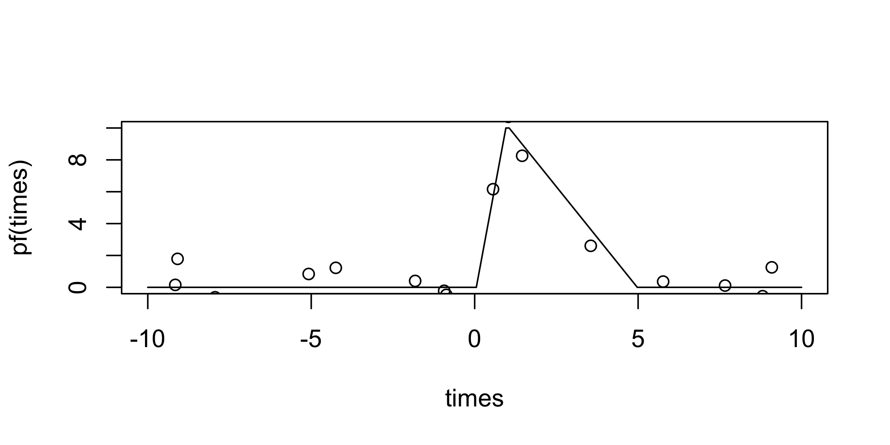
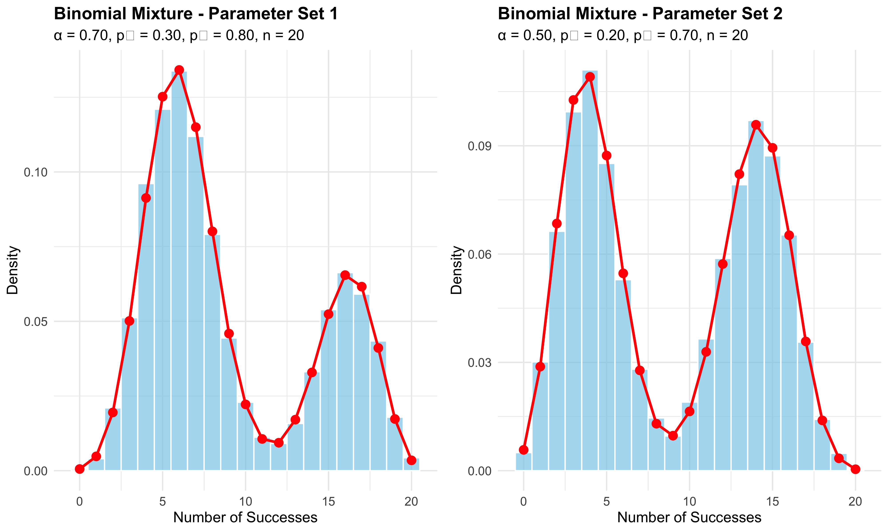
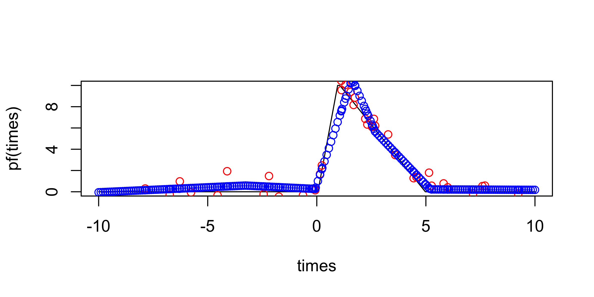
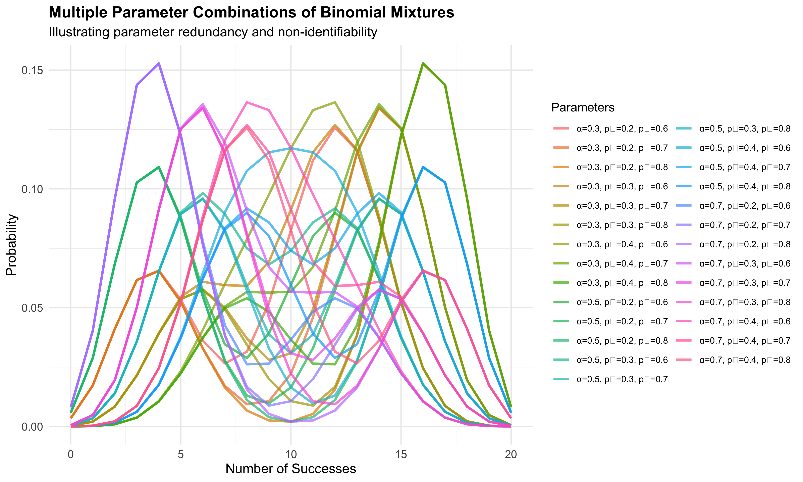

6 Intervention
6.1 Start defining the intervention in a time series
times <- seq(-10, 10, length.out = 200)
pf <- peak_fun(times, 1, 10, 5)
plot(times, pf(times), type = "l")
u <- runif(20, -10, 10)
points(u, gaussian_noise(pf, u))
u <- seq(-10, 10, length.out = 10)
intervals <- cbind(head(u, -1), tail(u, -1))
weights <- 5:1
weights <- weights / sum(weights)
locs <- weighted_sampling(1e4, intervals, weights)
hist(locs)
- We now have a way of simulating parameterized mean functions and observations with noise around them
- We also have ways of sampling locations to observe the function, based on a weighted combination of uniforms
- We need a way of estimating these mean functions and evaluating the resulting fit.
- We also need to evaluate many combinations of weightings, either using random search or bayesian optimization
First, we attempt to estimate these mean functions using simple piecewise linear splines
w <- c(1, 1, 1, 1, 3, 4, 3, 1, 1)
w <- w / sum(w)
u <- weighted_sampling(40, intervals, w)
y <- gaussian_noise(pf, u)
fit <- lm(y ~ bs(u, df = 6, degree = 1, Boundary.knots = c(-10, 10)))
plot(times, pf(times), type = "l")
points(u, y, col = "red")
points(u, predict(fit), col = "blue")
f_hat <- predict(fit, newdata = data.frame(u = times))
points(times, f_hat, col = "blue")
B <- 1e3
mse <- matrix(nrow = B, ncol = 2)
for (b in seq_len(B)) {
# random u's
u <- runif(50, -10, 10)
mse[b, 1] <- spline_mse(u, times, pf)
u <- weighted_sampling(50, intervals, w)
mse[b, 2] <- spline_mse(u, times, pf)
}
colnames(mse) <- c("uniform", "weighted")
mse <- as_tibble(mse) %>%
mutate(id = 1:n()) %>%
pivot_longer(-id, names_to = "sampling", values_to = "mse")
ggplot(mse) +
geom_histogram(
aes(mse, fill = sampling),
alpha = 0.8, position = "identity",
bins = 50
) +
scale_y_continuous(expand = c(0, 0, 0.1, 0)) +
scale_x_continuous(expand = c(0, 0))